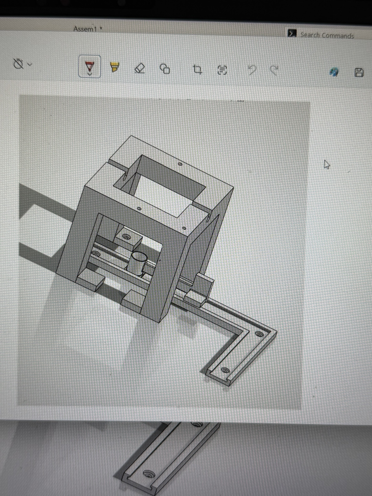

SOLIDWORKS
Modeled 3D-printable sample-handling jigs and fixtures, several of which were fabricated and implemented in the test cell.
SUMMER 2026 · ROBOTICS INTERN · IDAHO NATIONAL LABORATORY
Designing 3D-printable fixtures to support UR robot specimen-handling workflows in the MPTC test cell.

01 / OVERVIEW
During my internship at INL’s Structural Properties Laboratory, I used SOLIDWORKS to design 3D-printable jigs to support UR robot sample-handling workflows in the MPTC. Several of my jig designs were fabricated and implemented in the test cell, connecting the CAD design process to real laboratory use. The jig pictured here is one example of the designs that were implemented.
02 / DESIGN TO APPLICATION

03 / ROBOTICS EXPERIENCE
Alongside the fixture design work, I learned to operate the UR robotic arms and assisted with programming them for actual test-cell workflows. This helped me understand how tooling design and robotic manipulation influence each other.
04 / SKILLS
SOLIDWORKS, mechanical CAD, design for 3D printing, fixture design, UR robot operation, and robotic workflow programming.
SKILLS IN PRACTICE
Here is how the tools and techniques from my Technical Skills section were applied to this project.
Modeled 3D-printable sample-handling jigs and fixtures, several of which were fabricated and implemented in the test cell.
Learned UR robot operation and assisted with programming sample-handling workflows that the jigs supported.